Ilmastovelka.fi näyttää, kuinka paljon Suomessa päästämme ilmastopäästöjä yli Pariisin ilmastosopimuksessa sovitun rajan. Ilmastovelka.fi konkretisoi, kuinka paljon päästöjä on leikattava, että Pariisin ilmastosopimuksen tavoitteet 2030 voidaan saavuttaa.
Suomalaisten keskimääräiset päästöt vuodessa ovat 10,2 CO2 tonnia per henkilö. Pariisin sopimuksen 2030 tavoitetaso on 5,18 CO2 tonnia per henkilö.
Ilmastonmuutos uhkaa kaikkea elämää maapallolla. Ilmastonmuutoksen pysäyttämiseen alle 1,5 asteen rajan on vielä toivoa, sillä ratkaisevat teknologiat ja resurssit ovat jo olemassa. Päästöjen vähentämiseksi tarvitaan tekoja välittömästi.
Suomen kokonaispäästöt: CO2 tonnia
Sinun osuutesi keskimäärin Suomen päästöistä: CO2 tonnia
Suomen kasvihuonekaasupäästöt vuonna 1990 olivat 71,3 miljoonaa tonnia hiilidioksidia, ja vuonna 2017 päästöt olivat 56,1 miljoonaa tonnia.1
Tästä voidaan laskea, että jokaista suomalaista kohden päästöt olivat 10,2 tonnia vuodessa.2
Sitran arvion mukaan Pariisin sopimuksen edellyttämä tavoiteura tarkoittaa Suomelle 60 % päästövähennystä vuoteen 2030 mennessä.3 Koska vertailutasona käytetään vuotta 1990, Suomen kokonaispäästöjen tulisi siis olla vuonna 2030 korkeintaan 28,5 miljoonaa tonnia eli noin 5,2 tonnia per henki.
Laskentamenetelmistä tarkemmin täällä